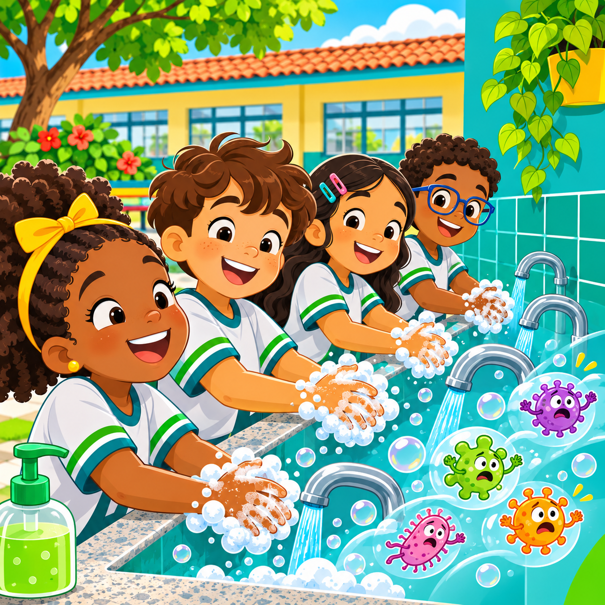
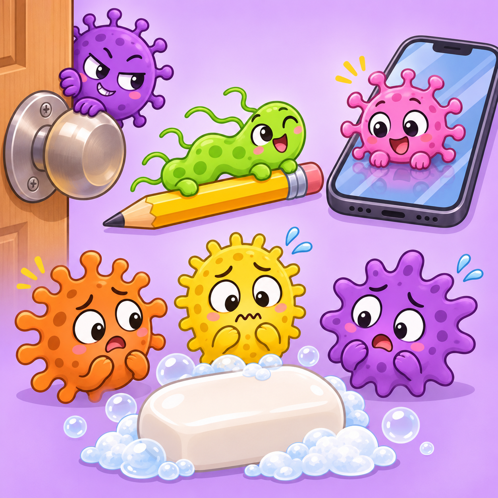
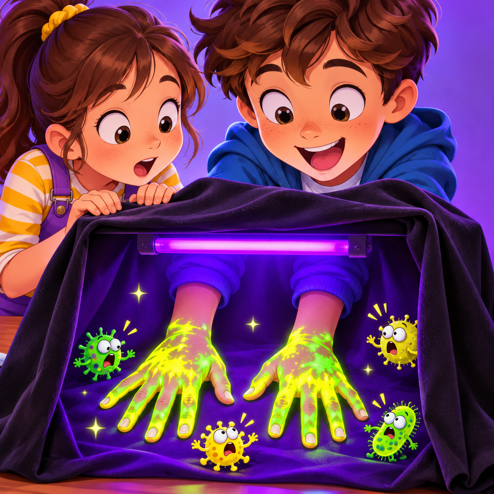
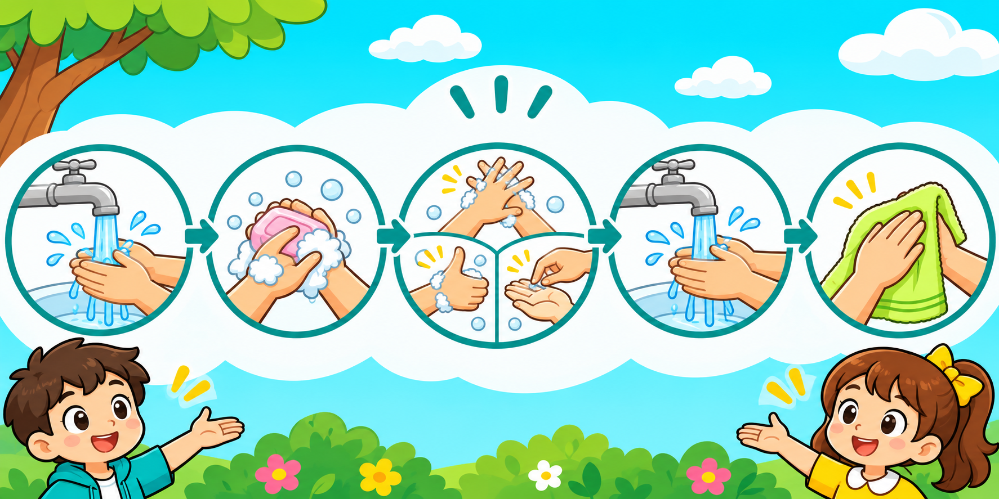

Aprenda sobre os bichinhos
invisíveis e como se proteger!

Os microrganismos são tão pequenos que não dá pra ver! Mas estão em todo lugar:
Nas maçanetas das portas
Nos lápis e cadernos da escola
Na tela do celular
Nas mesas e cadeiras
Quando damos a mão pros amigos
🔬 Existem mais de 800 tipos de bactérias vivendo nas nossas mãos agora mesmo!

Com um gel especial e uma luz mágica, conseguimos ver os "germes" nas suas mãos!
O gel fluorescente brilha no escuro e mostra como os germes passam de uma mão pra outra!
A luz negra revela tudo que os olhos não veem. Depois de lavar as mãos, vamos ver se ficou limpo de verdade!
Isso se chama
contaminação cruzada!
Quando os germes vão de um lugar pra outro pelas nossas mãos.

Molhe as mãos com água limpa
Coloque sabão e esfregue as palmas
Esfregue entre os dedos, o dedão e as unhas por 20 segundos
Enxágue bem com água corrente
Seque com toalha limpa ou papel
Dica: Cante "Parabéns" 2 vezes enquanto esfrega. Quando acabar a música, já deu os 20 segundos!
Antes de comer qualquer coisa
Depois de usar o banheiro
Depois de espirrar ou tossir
Depois de brincar ou tocar animais
Ao chegar em casa da rua ou escola
Depois de mexer no celular ou tablet
Use quando não tiver pia por perto!
No ônibus, na rua, na fila do lanche...
Mas ele não substitui água e sabão!
Frutas e verduras também precisam ser lavadas antes de comer!
80% das doenças comuns são transmitidas pelas mãos!
Lavar as mãos pode evitar metade das infecções!
Os microrganismos são 1.000 vezes menores que a ponta de um lápis!
Sabonete líquido
Álcool em gel 70%
Este folheto — pra lembrar sempre!
🦸♂️🦸♀️
Agora você é um
Super-Herói da Higiene!
Ensine sua família e amigos também!
Material educativo — Projeto de Extensão Universitária
UNINASSAU Barreiras • COOPEB • 2026